Tecno: La Fusta
Guia d'estudi completa i interactiva per preparar l'examen de tecnologia sobre la fusta com a material d'ús tècnic: des de la seva composició i l'anatomia interna del tronc, fins a la classificació (toves, dures, naturals i derivats artificials), formes comercials, procés industrial de transformació i el qüestionari oficial del vídeo resolt pas a pas.
L'examen posa el màxim focus en el contingut dels Apunts de Teoria (Parts del tronc, Classificació de fustes toves/dures i naturals/artificials, Formes comercials i Fases d'obtenció). Per això hem estructurat cada apartat teòric amb les seves fotografies reals i explicacions clau, reservant el qüestionari del vídeo per a la secció de repàs final.
Origen i Composició de la Fusta
Què és la fusta i d'on s'obté?
La fusta té el seu origen exclusivament en els arbres. És una matèria primera natural, d'origen vegetal, renovable i biodegradable que forma la part llenyosa del tronc, les branques i les arrels de les plantes llenyoses.
Lignina
Actua com a ciment natural que uneix i aglutina les fibres cel·lulars. Dóna rigidesa, duresa i impermeabilitat.
Cel·lulosa
Forma l'esquelet fibrós de les parets de les cèl·lules vegetals. Dóna flexibilitat i resistència a la tracció.
Resines
Substàncies naturals viscoses que l'arbre segrega com a mecanisme de defensa contra fongs, paràsits i insectes.
La fusta està formada principalment per lignina (el ciment rígid), cel·lulosa (les fibres flexibles) i resines. Quan l'arbre és viu, també conté una gran quantitat d'aigua (saba) que caldrà assecar durant la fase industrial.
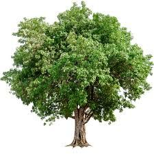
L'arbre: Font Natural de la Fusta
La fusta del tronc s'utilitza per a taulons, bigues i mobles; les branques i arrels s'aprofiten per a olis i cel·lulosa química.
Parts del Tronc d'un Arbre
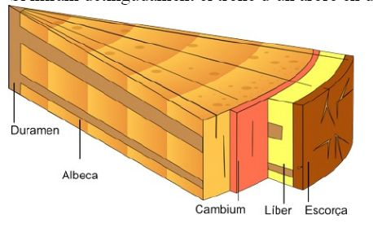
Secció en falca d'un tronc: visualització de les 5 capes des de l'exterior (dreta) fins al centre (esquerra).
Les 5 Capes en Ordre Transversal
Fes clic a qualsevol capa per ressaltar la seva definició oficial i funció clau:
És la part més exterior de l'arbre. Protegeix les altres capes internes de les inclemències del temps, paràsits i cops. Es sol crivellar (esquerdar) i anar caient amb el temps.
Taula Completa d'Estudi (D'exterior a interior):
Escorça
Part més exterior. Protegeix les altres capes. Es sol crivellar i anar caient.
Líber
Teixit conductor pel qual puja la saba amb els nutrients cap a les branques i fulles.
Càmbium
Capa encara no endurida de tot. És la que permet el creixement de l'arbre.
Albeca
Fusta jove, viva i clara. Per ella circula saba activa. Menys dura que el centre.
Duramen
Fusta vella i seca que serveix de suport i resistència estructural per l'arbre.
Tipus de Fusta i Classificació
1. Segons el tipus d'arbre: Fustes Toves vs Fustes Dures
Classificació segons la fulla de l'arbre d'origen (caduca o perenne) i les seves propietats mecàniques:
Fustes Toves
Provenen d'arbres de fulla perenne (coníferes). Són fustes resinoses, lleugeres, de creixement ràpid i tonalitats clares.
El Pi o l'Avet
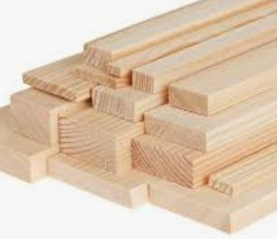
Fustes Dures
Provenen d'arbres de fulla caduca (frondoses). Són fustes més denses, pesades, resistents al desgast i de creixement lent.
El Roure, l'Alzina o el Noguer
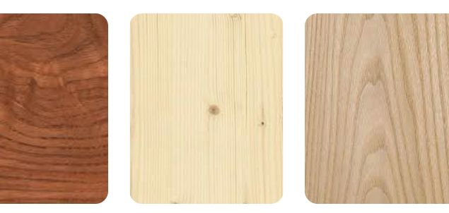
2. Segons la composició: Fustes Naturals vs Artificials
Com es distingeixen la fusta massissa obtinguda de l'arbre i els taulers derivats industrials:
Directament dels arbres talats
S'obtenen directament dels arbres serrats. Es poden apreciar totes les propietats originals naturals: l'olor pròpia, el color, i les vetes (els cercles de creixement anuals).
Els 3 Grans Derivats Industrials Obligatoris
S'obtenen a partir de la fusta natural aplicant diferents processos físics i químics. Aprofiten les restes de fusta, són més barates, permeten taulers gegants i no es deformen amb facilitat.
Contraplacats
Format per diverses planxes de fusta (xapes) amb les fibres encolades superposades alternant la direcció de les fibres a 90°.
El nombre de capes és sempre imparell (3, 5, 7 capes) perquè el conjunt quedi simètric i no es corbi!
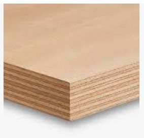
Aglomerat
Format per serradures i encenalls de fusta mesclades amb cola sintètica i premsades a forta pressió i calor.
Molt barat i rígid, però molt sensible a la humitat (es bufa). Se sol revestir de melamina per a mobles econòmics.
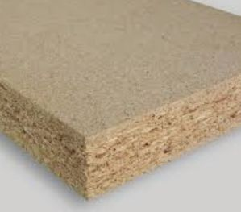
Premsat o DM
La fusta es converteix en fibres fines abans d'encolar-les i premsar-les (Densitat Mitjana / MDF).
Superfície extremadament llisa, homogènia i sense encenalls. Perfecte per lacar, pintar i tallar amb precisió.
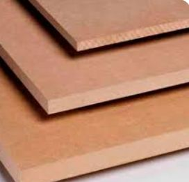
Formes Comercials de la Fusta
Al magatzem de fusta o fusteria, el material no es ven en troncs rodons, sinó en peces estandarditzades amb formes i mides concretes segons l'ús final:
Taulons
Peces de forma prismàtica de dimensions que poden arribar a ser considerables (grossos i llargs).
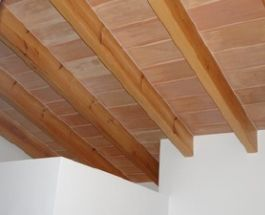
Llistons i Varetes
Peces de forma prismàtica (o cilíndrica en varetes) de secció molt menor a la llargària.
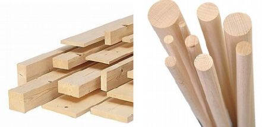
Perfils o Motllures
Peces semblants als llistons però amb una forma determinada (relleus, sanefes o formes motllurades).
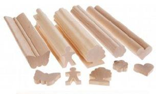
Taulers i Taules
Peces rectangulars amples amb un determinat espessor.
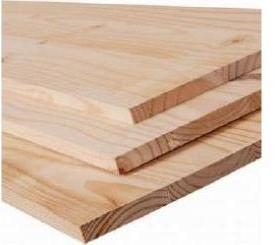
Planxes (Làmines fines / Xapes)
Làmines fines de fusta natural (gruixos inferiors a 1 mm o pocs mm). S'obtenen per desenrotllat o aplanament.
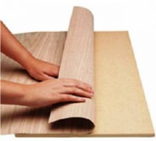
Procés d'Obtenció de la Fusta (5 Fases)
El cicle complet des que un arbre madura al bosc fins que la fusta arriba a la indústria en condicions d'ús té 5 passos ordenats obligatoris:
Tala
Es tallen els arbres al bosc amb serres mecàniques quan han assolit la maduresa necessària (de 4 a 8 anys en plantacions industrials).
Transport
Trasllat dels troncs a la fàbrica en camions, trens o rius. S'emmagatzemen en sec (patis) o basses d'aigua amb sulfats contra fongs.
Desescorçat
Extracció de l'escorça protectora i impureses del tronc mitjançant corrons especials, seguit del procés de cilindratge.
Serratge
Tall longitudinal del tronc amb serres per obtenir taulers i taulons, o cilindratge i desenrotllat en xapa per a contraplacats.
Assecatge
Extracció de la humitat (assecatge natural a l'aire o en forns industrials) per evitar que la fusta es corbi, podreixi o esquerdi.
Qüestionari del Vídeo de la Fusta (Amb Respostes)
A partir de quin compost s'obté el 95% del paper que es produeix mundialment?
Resposta oficial: La cel·lulosa
Explicació: És el polímer vegetal fibrós que constitueix la paret de les cèl·lules vegetals.
Quin és el principal component de la fusta?
Resposta oficial: Aigua i lignina
Explicació: La lignina dóna rigidesa i l'aigua transporta els nutrients per l'arbre viu.
Per a quina finalitat s'utilitza la lignina?
Resposta oficial: Fàrmacs. Usos veterinaris.
Explicació: La indústria farmacèutica i veterinària aprofita la lignina extreta durant el blanqueig de la pasta de paper.
Per a la fabricació de quins productes s'utilitza la fusta dels troncs?
Resposta oficial: Llistons, làmines, fusta massissa, obra fina de fusteria, medicaments, bigues, xapes, paper,...
I la fusta de les branques i arrels? Per a què s'utilitza?
Resposta oficial: Olis, cel·lulosa i nitrocel·lulosa per la indústria química.
Quina és la funció del tronc a l'arbre?
Resposta oficial: Portar aigua i minerals (aliment) fins a les fulles.
Quines són les dues propietats de la fusta comentades al vídeo?
Resposta oficial: Porositat i resistència.
Respecte a la transformació de la fusta (Bloc complet 8.1 a 8.10)
Desplega per veure les 10 preguntes i respostes oficials del procés fabril
De 4 a 8 anys
En sec (en patis) i en basses (aigua)
Fongs
Mitjançant aspersors, es mullen els troncs amb sulfats per evitar l'atac de microorganismes
1- Treure impureses i escorça (desescorçat), 2- Cilindratge
Desenrollat i contraxapat
Assecat (treure l'aigua)
Tauler contraxapat [tablero contrachapado]
Apilar capes de xapes contraxapades encolades
Per tal que el conjunt quedi simètric, d'aquesta manera s'estabilitza
Fitxers i Documents Oficials de Classe
APUNTS FUSTA.pdf
El document de diapositives original del professor amb els 4 blocs de teoria (origen, tronc, tipus i formes comercials) i el procés d'obtenció.
Veure o Descarregar PDFQüestionari vídeo fusta RESPOSTES.pdf
Full oficial de respostes de les 10 preguntes del vídeo de transformació de la fusta a fàbrica.
Veure o Descarregar PDFTest Interactiu d'Autoavaluació (6 Preguntes)
Respon a aquestes preguntes clau per comprovar si tens els conceptes clars abans de l'examen de tecnologia. Si l'encertes, sortirà verd i confetti!